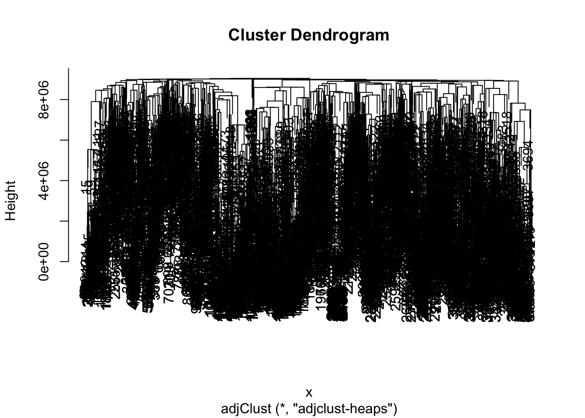

Clustering of Hi-C contact maps
Shubham Chaturvedi, Pierre Neuvial, Nathalie Villa-Vialaneix
2017-09-14
In this vignette we demonstrate the use of hicClust function in the adjclust package. hicClust performs adjacency-constrained hierarchical clustering of genomic regions or loci. hicClust is a specialized version of adjClust function designed specially to perform clustering of genomic regions or loci, where the similarity between any pair of regions quantifies the intensity of the physical interactions between these two regions at the DNA level. These similarities are measured by Chromosome conformation capture techniques such as Hi-C.
This function implements the algorithm described in the third chapter of [2].
library("adjclust")
library("HiTC")Loading genome wide contact maps
hic_imr90_40 is a list of objects of class HTCexp. Each of these objects corresponds to a Hi-C contact map between one chromosome and another. Below, hic_imr90_40$chrXchrX contains object obj which is the contact map corresponding to chromosome X vs chromosome X. The corresponding Hi-C data is stored as a Matrix::dsCMatrix in the slot named intdata.
data("hic_chrXchrX", package="adjclust")Remove all the rows and columns containing only zeros from the dataset.
selected <- apply(intdata(obj), 1, sum) > 0
intd <- intdata(obj)[selected,selected]
x_int <- x_intervals(obj)[selected,]
y_int <- y_intervals(obj)[selected,]
obj <- new("HTCexp", intd, x_int, y_int)Now we have a look at the data.
mat <- intdata(obj)
image(mat, lwd=0)
Using hicClust for various input classes
Case 1: Input as HiTC::HTCexp object
class(obj)## [1] "HTCexp"
## attr(,"package")
## [1] "HiTC" fit1 <- hicClust(obj)Case 2: Input as Matrix::dsCMatrix contact map
class(mat)## [1] "dsCMatrix"
## attr(,"package")
## [1] "Matrix" fit2 <- hicClust(mat)Case 3: Input as text file
The input text file should have one line per pair of loci for which an interaction has been observed (in the format: locus1
Here, we first create a sample text file with the above format using sparse matrix mat created above.
V3 <- mat@x
V1 <- mat@Dimnames[[1]][mat@i+1] #loci1names
V2 <- rep(mat@Dimnames[[2]], diff(mat@p)) #loci2names
content <- cbind(as.numeric(V1), as.numeric(V2), as.numeric(V3))
tf <- tempfile(fileext = ".txt")
write.table(content, tf, sep = " ", col.names = FALSE, row.names = FALSE)Now that we have a text file tf, we are ready to pass it as input to the function hicclust
fit3 <- hicClust(tf, sep = " ") Output
The output of the snpClust is of class “hclust”. In particular, it can be plotted as a dendrogram:
plot(fit1)
Moreover, the output contains an element named merge which describes the successive merges of the clustering, and an element gains which gives the improvement in the criterion optimized by the clustering at each successive merge.
head(cbind(fit1$merge, fit1$gains))## [,1] [,2] [,3]
## [1,] -1619 -1620 2.000000
## [2,] -1233 -1234 9.000000
## [3,] -1232 2 9.666667
## [4,] -1241 -1242 21.000000
## [5,] -2382 -2383 22.000000
## [6,] -1162 -1163 23.000000For equivalent input in different classes, we get equivalent results.In this example, fit1, fit2 and fit3 are equivalent.
all.equal(fit1$merge, fit2$merge)## [1] TRUEall.equal(fit1$gains, fit2$gains)## [1] TRUEall.equal(fit2$merge, fit3$merge)## [1] TRUEall.equal(fit2$gains, fit3$gains)## [1] TRUEReferences
[1] Servant N., Lajoie B.R., Nora E.P., Giorgetti L., Chen C., Heard E., Dekker J., Barillot E. (2012) HiTC : Exploration of High-Throughput ‘C’ experiments. Bioinformatics
[2] Dehman A. (2015). Spatial clustering of linkage disequilibrium blocks for genome-wide association studies. Phd Thesis, Université Paris Saclay.
[3] Fotuhi Siahpirani A, Ay F, Roy S. (2016) A multi-task graph-clustering approach for chromosome conformation capture data sets identifies conserved modules of chromosomal interactions. Genome Biology. 17: 114. PMID 27233632 DOI: 10.1186/s13059-016-0962-8
Session information
sessionInfo()## R version 3.4.1 (2017-06-30)
## Platform: x86_64-apple-darwin15.6.0 (64-bit)
## Running under: OS X El Capitan 10.11.6
##
## Matrix products: default
## BLAS: /Library/Frameworks/R.framework/Versions/3.4/Resources/lib/libRblas.0.dylib
## LAPACK: /Library/Frameworks/R.framework/Versions/3.4/Resources/lib/libRlapack.dylib
##
## locale:
## [1] en_US.UTF-8/fr_FR.UTF-8/en_US.UTF-8/C/en_US.UTF-8/en_US.UTF-8
##
## attached base packages:
## [1] stats4 parallel stats graphics grDevices utils datasets
## [8] methods base
##
## other attached packages:
## [1] HiTC_1.20.0 GenomicRanges_1.28.4 GenomeInfoDb_1.12.2
## [4] IRanges_2.10.2 S4Vectors_0.14.3 BiocGenerics_0.22.0
## [7] adjclust_0.4.0
##
## loaded via a namespace (and not attached):
## [1] Rcpp_0.12.12 compiler_3.4.1
## [3] RColorBrewer_1.1-2 XVector_0.16.0
## [5] bitops_1.0-6 tools_3.4.1
## [7] zlibbioc_1.22.0 digest_0.6.12
## [9] evaluate_0.10.1 lattice_0.20-35
## [11] Matrix_1.2-10 DelayedArray_0.2.7
## [13] yaml_2.1.14 GenomeInfoDbData_0.99.0
## [15] rtracklayer_1.36.4 stringr_1.2.0
## [17] knitr_1.16 Biostrings_2.44.2
## [19] snpStats_1.26.0 rprojroot_1.2
## [21] grid_3.4.1 Biobase_2.36.2
## [23] XML_3.98-1.9 survival_2.41-3
## [25] BiocParallel_1.10.1 rmarkdown_1.6
## [27] magrittr_1.5 backports_1.1.0
## [29] Rsamtools_1.28.0 htmltools_0.3.6
## [31] matrixStats_0.52.2 GenomicAlignments_1.12.1
## [33] splines_3.4.1 SummarizedExperiment_1.6.3
## [35] stringi_1.1.5 RCurl_1.95-4.8